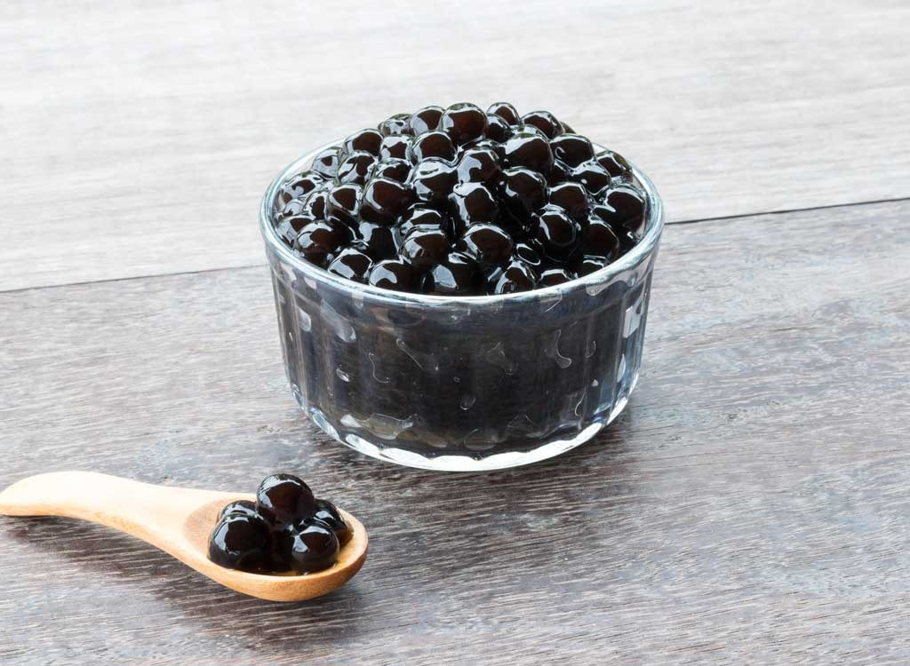
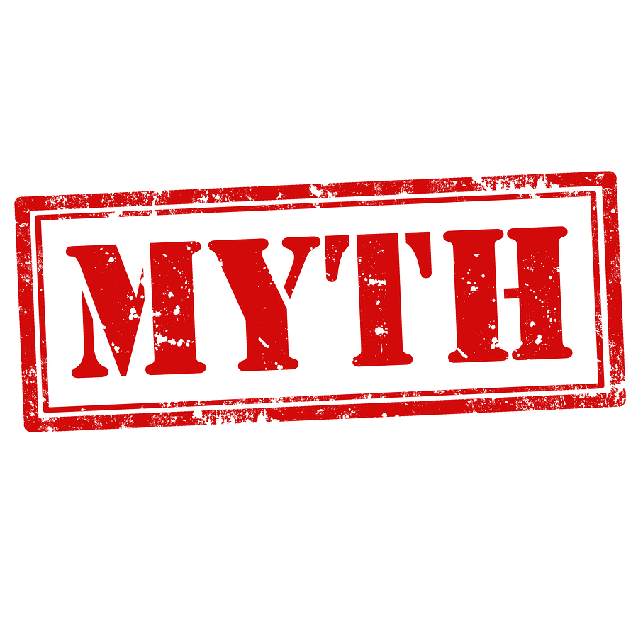

Boba is a popular topping tea beverages(although it is always seen sinking at the bottom of the cup)
It is found in milk tea, also called "bubble tea", "pearl tea" or simply "boba tea," the cold drink originated from Taiwan.
The most consumed boba has black color, and the texture is soft and chewy.

What is boba made of?
Boba is made of tapioca starch which comes from cassava root.
The boba, tapioca ball, itself is tasteless.
It is usually sugar-coated and used in the drink.

Boba causes cancer?
The boba drinks widely spreaded across Asia, the boba shops has multiplied over time in North America, as well as it got famous in the Europe, especially Germany.
The myth about boba started with the release of the research from University Hospital Aachen, Germany.
What was the finding?
According to the report of the German researcher, Manfred Möller, of the Institute of Hygiene and Environmental Medicin at Aachen, the tapioca contain stryrene, acetophenone and other brominated chemicals.
These chemicals, they said, "shouldn't be in food at all" and they are considered by those German researchers and the media to relate to polychlorinated biphenyls(PCB), which reportedly can cause cancer and other harmful health effects in animals and humans.
Myth Busted
(1) The study by German researchers is not reliable at all
UC Berkeley assessed that there was no official publication, and thus the finding was not peer-reviewed.
(2) US FDA (United States Food and Drug Administration) states that styrene and acetophenone are not PCB.
In fact, FDA approved styrene and acetophenone to be used in food production.
They are not chemically related to PCD as well.
What does drinking Boba Tea really do to your body?
Work Cited:
https://en.wikipedia.org/wiki/Bubble_tea
https://www.drweil.com/diet-nutrition/food-safety/is-boba-tea-bad/ Is Boba Tea Bad?
https://www.livestrong.com/article/327076-what-is-the-nutritional-value-of-boba/ What Is the Nutritional Value of Boba?
http://www.berkeleywellness.com/healthy-eating/food-safety/article/tapioca-pearl-problems
Tapioca Pearl Problems by Keng Lam, University of California Berkeley